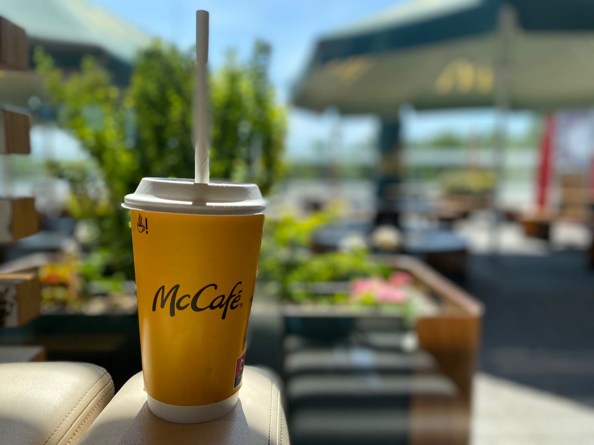
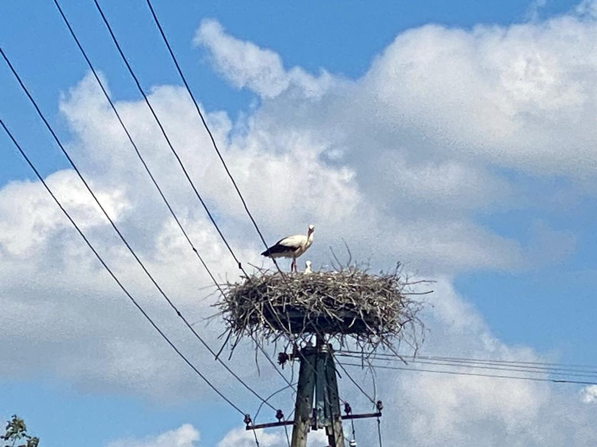
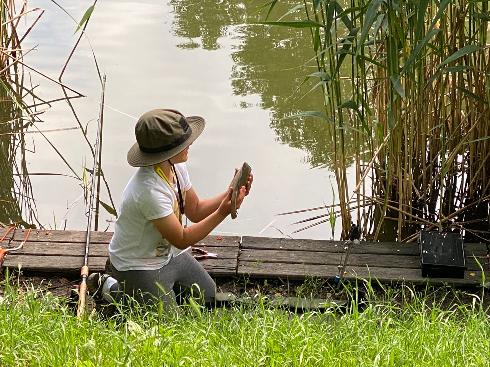

Paper
McCafé in Poland: everything in paper.
The cup was paper, the lid was paper, the container was paper, even the straw was paper. A small everyday design detail, held in one hand.

Storks
The stork babies were born.
Earlier on the route in Bulgaria, the storks were still hatching. After Iceland, on the return route, the young storks were already born. The road moved, and nature kept its own calendar.

Fishing Culture
不能让 Poland 湖里的鱼和别国的鱼通话。
不能让 Poland 湖里的鱼和别国的鱼通话。 它会误导别鱼。
因为这里的人钓到大鱼、小鱼， 都会放生回湖里。 所以 Poland 的鱼如果跟别国的鱼说： “不要怕，人类只是钓我们来玩一下，等下会放我们回去。” 那别国的鱼可能会信错人。
This was Poland fishing culture as I saw it: the joy was in the catching, smiling, and releasing.
